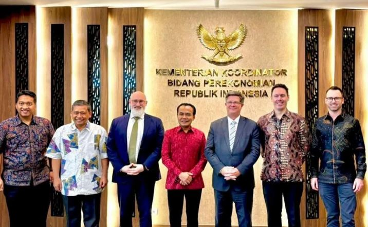
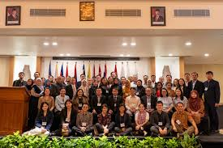
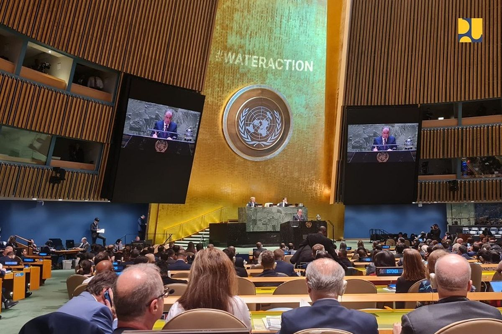

Pengertian Kerja Sama Internasional
Kerja sama internasional adalah bentuk kerja sama yang melibatkan banyak negara dan lembaga dunia untuk mencapai tujuan bersama. Kerja sama ini tidak terbatas pada satu kawasan atau satu organisasi tertentu. Di dalamnya termasuk komitmen global, perjanjian internasional, bantuan lintas negara, pendanaan, pertukaran teknologi, hingga penyusunan aturan dan standar bersama.
Kerja Sama Bilateral
Kerja sama bilateral adalah kerja sama antara dua negara untuk mencapai tujuan tertentu. Contohnya adalah sebagai berikut:
- Indonesia - Australia (KIAT): Kerja sama untuk memperbaiki infrastruktur air minum dan sanitasi, termasuk proyek water sensitive city di IKN.
- Indonesia - Amerika Serikat (USAID): Komitmen lebih dari 50 juta dolar untuk memperluas akses air minum aman melalui program seperti IUWASH.
- Indonesia - Jepang (JICA): Pembangunan instalasi pengolahan air (IPA) dan pelatihan teknis bagi PDAM di berbagai kota.
Kerja Sama Regional
Kerja sama regional adalah kerja sama antarnegara dalam satu kawasan. Misalnya:
- ASEAN Working Group on Water Resources Management (AWGWRM): Indonesia ikut terlibat aktif dalam penyusunan pedoman dan strategi pengelolaan air di kawasan Asia Tenggara, termasuk konservasi air, pengendalian banjir, dan perlindungan sumber air.
- ASEAN Strategic Plan of Action on Water Resources Management: Selain ikut menyusun, Indonesia juga berpartisipasi dalam penerapan program-program di dalamnya, seperti peningkatan kapasitas teknis negara anggota dan harmonisasi kebijakan pengelolaan sungai.
Kerja Sama Multilateral
Kerja sama multilateral melibatkan banyak negara dan biasanya berada di bawah organisasi internasional seperti PBB, Bank Dunia, atau ADB.
- Program Bank Dunia dan ADB: Mendukung Indonesia melalui pendanaan pembangunan jaringan air minum, pembangunan sanitasi komunal seperti IPAL kecil, serta pelatihan bagi PDAM agar layanan air perpipaan lebih merata dan berkualitas.
- Kerja sama melalui UN-Water: UN-Water membantu Indonesia dengan penyediaan data, riset, dan pertukaran pengetahuan global tentang pengelolaan air, sehingga Indonesia dapat menyesuaikan kebijakan dengan standar internasional.
- Dukungan UNICEF dan WHO: UNICEF dan WHO menjalankan program WASH di Indonesia, seperti pembangunan toilet di sekolah, edukasi cuci tangan, perbaikan kualitas air, serta pendampingan perilaku hidup bersih dan sehat di masyarakat.